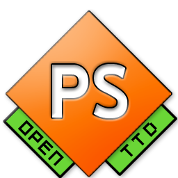
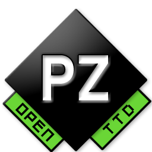
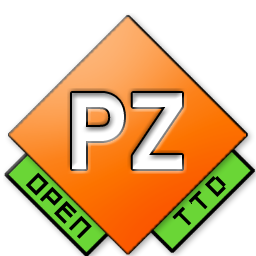

A few new icons.
I have three launchers on my desktop, one for each of the servers. To distinguish them without thinking, I altered the default openttd icon a bit for them:


Here they are for your delectation. Enjoy.
A few hours later, V453000, who thought the colours not clear enough and the lettering too small for icons, made these:
  


Have fun, either way.
Categories: Community News
zxbiohazardzx May 24, 2013 20:19
im loving these already!
Mazur May 25, 2013 22:25
Thank you for that, a bit of feedback, especially when positive, is quite appreciated.